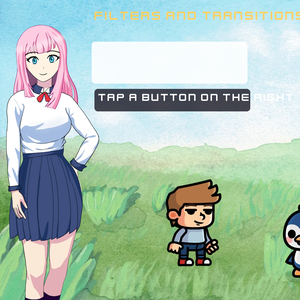
Filters showcase
Une vitrine de 32 filtres d'écran (télé, VHS, noir et blanc, sous l'eau, cauchemar…) et de 19 transitions : touche un bouton et regarde l'effet sur la scène.
⬇️ Télécharger le projet (2.5 Mo)Français · English · Español · Deutsch · Italiano · Português · Русский · 中文 · 日本語
Des jeux complets faits avec Yop2D, le moteur de jeu 2D gratuit et sans code pour Android. Ouvrez-les dans Yop2D (onglet « Exemples » de l'écran d'accueil), jouez-y, puis regardez leurs nœuds et modifiez-les pour apprendre.

Une vitrine de 32 filtres d'écran (télé, VHS, noir et blanc, sous l'eau, cauchemar…) et de 19 transitions : touche un bouton et regarde l'effet sur la scène.
⬇️ Télécharger le projet (2.5 Mo)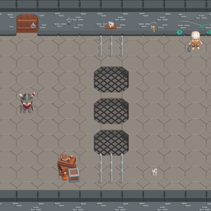
Un donjon vu de dessus, construit case par case avec le pack Donjon : passe les trappes quand elles sont fermées, évite les pics et le gardien squelette, prends la clé et ouvre la porte.
⬇️ Télécharger le projet (662 Ko)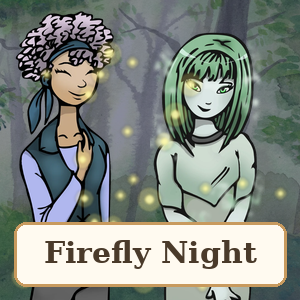
Une histoire à choix (visual novel) avec Pen, Angie et Iris le fantôme : le jeu demande ton prénom, puis pétales au coucher du soleil, forêt de lucioles, orage avec éclairs, choix chronométré, neige magique en plein été… et 4 fins. Tout est fait avec des nœuds.
⬇️ Télécharger le projet (1.8 Mo)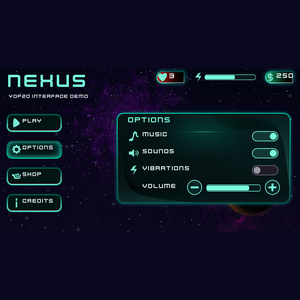
Une vitrine de l'interface, style hologramme : menu animé, panneaux qui glissent, interrupteurs qui changent vraiment le jeu, volume, boutique avec des pièces, barre d'énergie qui se recharge et fenêtre de récompense. Tout est fait avec des nœuds.
⬇️ Télécharger le projet (929 Ko)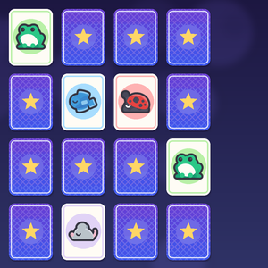
Un jeu de memory : retourne 2 cartes à la fois et retrouve les 8 paires de petites créatures en un minimum de coups. Les cartes changent de place à chaque partie.
⬇️ Télécharger le projet (286 Ko)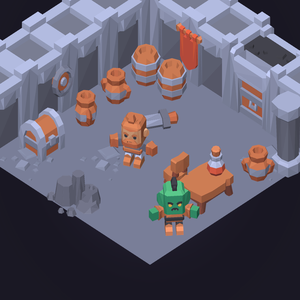
Un escape game dans un cachot en vue iso : fouille la pièce, brise des pots, résous le code du coffre et trouve 3 pièces d'or pour acheter la clé à l'orc. Avec inventaire, chronomètre et textes en 9 langues.
⬇️ Télécharger le projet (423 Ko)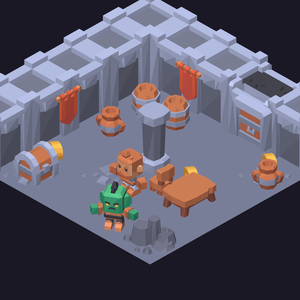
Promène-toi au joystick dans un donjon en vue iso : le héros passe derrière la colonne ou devant la table, se cogne aux meubles et change d'image selon sa direction. Trouve les 5 pièces d'or cachées pour ouvrir la grille. Montre l'ordre d'affichage selon la position et la marche en vue iso.
⬇️ Télécharger le projet (535 Ko)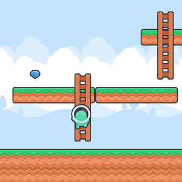
Le personnage change d'animation tout seul : il marche, s'accroupit, saute et grimpe aux échelles, vu de dos. Aucun nœud pour le faire bouger : tout se règle dans « Comportement de l'objet » (Personnage de plateforme, Échelle). Un panneau affiche le nom de l'animation jouée. Ramasse les 5 gemmes.
⬇️ Télécharger le projet (156 Ko)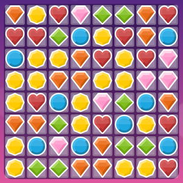
Un jeu « aligner 3 » style Candy Crush : échange deux bonbons voisins pour en aligner 3 ou plus, enchaîne les combos et atteins 1500 points en 25 coups. Tout le jeu tient en quelques nœuds grille.
⬇️ Télécharger le projet (238 Ko)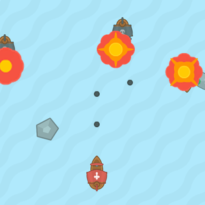
Une bataille navale qui explose de partout : dirige ton bateau au joystick, tire en rafale sur les pirates qui foncent sur toi et te bombardent. 3 vies, score, et ils vont de plus en plus vite.
⬇️ Télécharger le projet (121 Ko)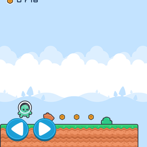
Un jeu de plateforme sur 3 écrans : pièces à ramasser, ennemis à écraser en sautant dessus, pics, 3 vies et un drapeau d'arrivée.
⬇️ Télécharger le projet (144 Ko)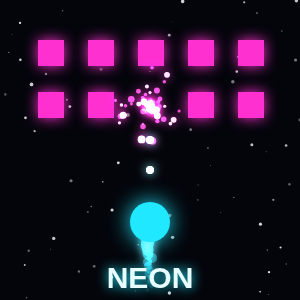
Un jeu d'arcade de vaisseau au style néon : tirez sur les vagues d'ennemis et faites exploser le score.
⬇️ Télécharger le projet (254 Ko)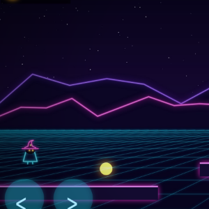
Un jeu de plateforme néon avec une caméra qui suit le joueur, des pièges et un portail de sortie.
⬇️ Télécharger le projet (1.4 Mo)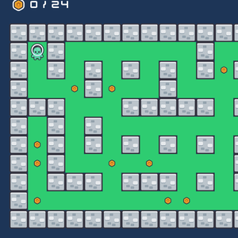
Un labyrinthe en tuiles : ramassez toutes les pièces pendant que deux mouches vous poursuivent en trouvant leur chemin.
⬇️ Télécharger le projet (121 Ko)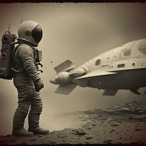
Une histoire à choix angoissante : un astronaute perdu sur la Lune. Les dialogues existent en 9 langues.
⬇️ Télécharger le projet (262 Ko)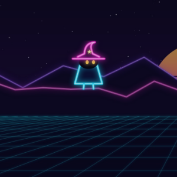
Une vitrine de tous les effets visuels : explosions, feu, pluie, neige, électrocution, flash, fondu… d'un simple toucher.
⬇️ Télécharger le projet (1.0 Mo)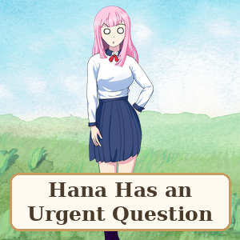
Une comédie absurde en dialogues : Hana a une question urgente… mais personne n'arrive à la poser. Des cœurs d'amitié, 5 fins (dont une secrète), des canards et une chaussette. Le modèle parfait pour un jeu de dialogues drôle.
⬇️ Télécharger le projet (1.9 Mo)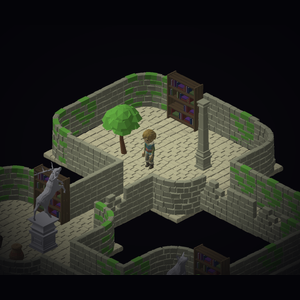
Un grand labyrinthe de ruines en vue isométrique, exploré à la seule lumière d'une torche : salles, couloirs courbes, 4 coffres à trouver et une porte de sortie. Fait avec le pack en ligne « Ruines modulaires ».
⬇️ Télécharger le projet (257 Ko)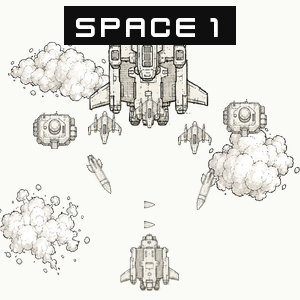
Un jeu de tir spatial vertical, dessiné comme un croquis : décollage, vagues d'ennemis, missiles guidés, bâtiments de défense, un boss final et des bonus qui donnent des vies. Titre, meilleur score, sons et textes en 9 langues, le tout sans une ligne de code.
⬇️ Télécharger le projet (5.8 Mo)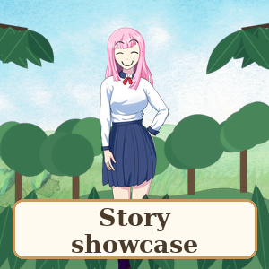
La vitrine des jeux de dialogue : un menu avec Hana, et chaque bouton montre une fonction en action : décor qui bouge lentement, parallaxe en 3 couches, gras / italique / couleurs, succès, conversation par SMS, météo et zoom, mode roman. Touche, regarde, puis copie ce qui te plaît.
⬇️ Télécharger le projet (2.0 Mo)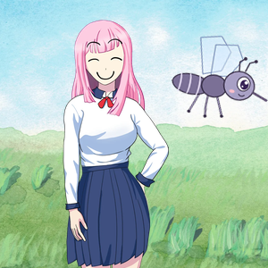
Hana raconte son histoire… quand un moustique s'en mêle ! Une image qui traverse le décor (nœud « Passage dans le décor »), tourne autour d'elle, puis fonce vers l'écran. Idéal pour voir les mouvements par étapes en action.
⬇️ Télécharger le projet (1.6 Mo)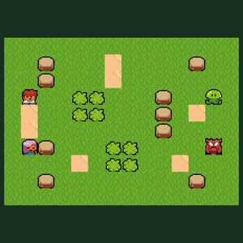
Un jeu de tactique au tour par tour sur une grille, entièrement fait avec les nœuds de Yop2D : touche un héros pour voir où il peut aller (cases bleues, la forêt coûte plus de pas, les montagnes bloquent), puis touche un monstre dans la zone rouge pour l'attaquer. Fiches d'unités, tours, terrains, chemins et dégâts : un point de départ pour ton propre jeu de stratégie.
⬇️ Télécharger le projet (234 Ko)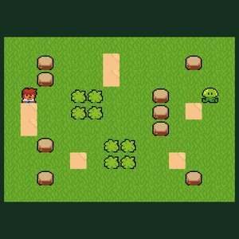
La version courte pour comprendre : un héros, un monstre, et les nœuds de tactique expliqués par des cadres et des post-it dans le Blueprint. Touche le héros pour voir ses cases bleues, avance, puis attaque le monstre dans la zone rouge.
⬇️ Télécharger le projet (135 Ko)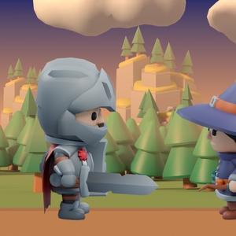
Un début d'aventure illustré, puis un niveau à jouer : Aldric et Mira dans un village au crépuscule (décor en 3D qui bouge en profondeur), un choix, un cimetière hanté, puis la forêt : saute, frappe les bandits à l'épée, ramasse les orbes et atteins le portail.
⬇️ Télécharger le projet (1.6 Mo)Dans Yop2D, ces exemples se téléchargent tout seuls depuis l'onglet « Exemples ». Vous pouvez aussi importer le fichier zip avec « Ouvrir un projet téléchargé ».